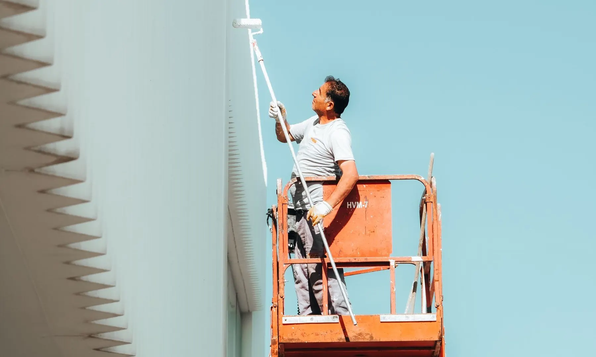
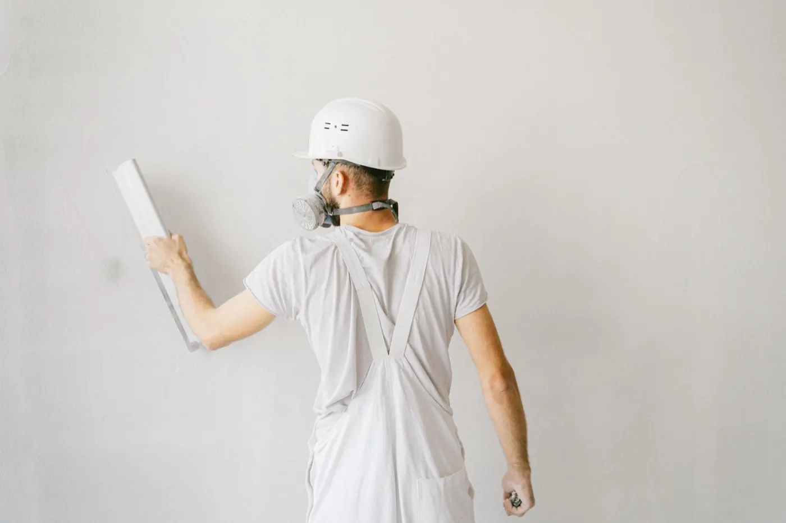
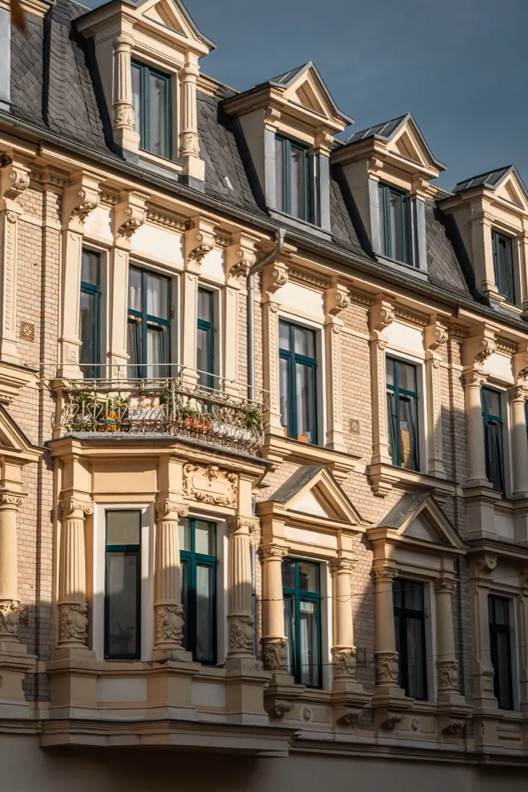
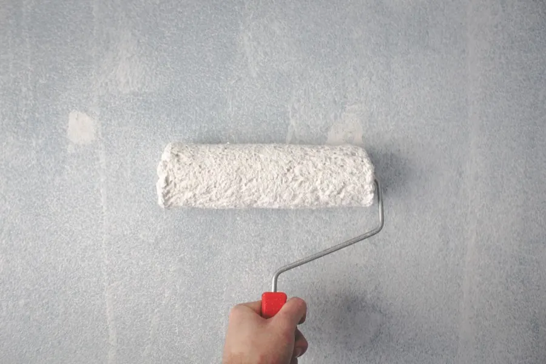
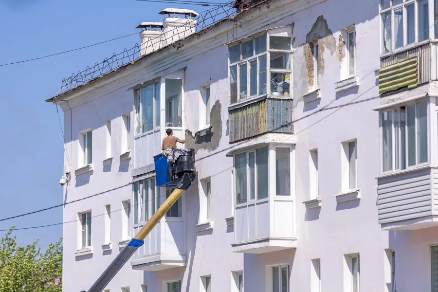
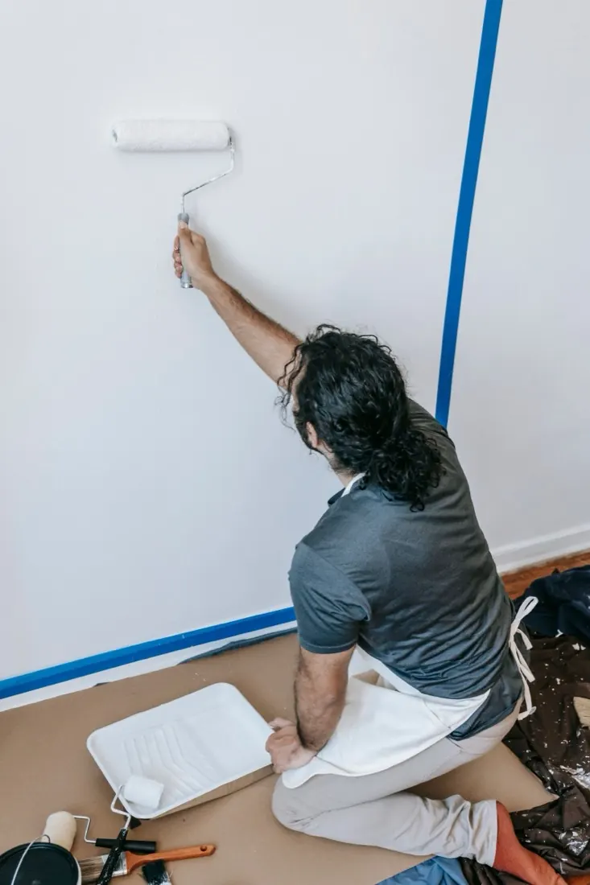
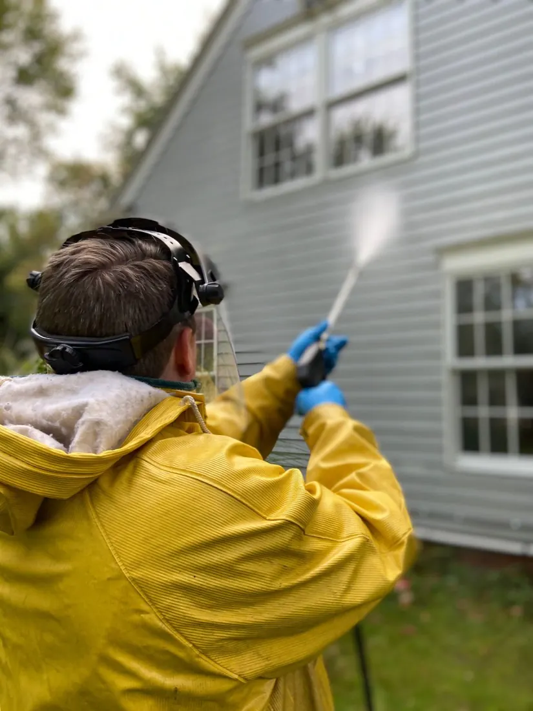
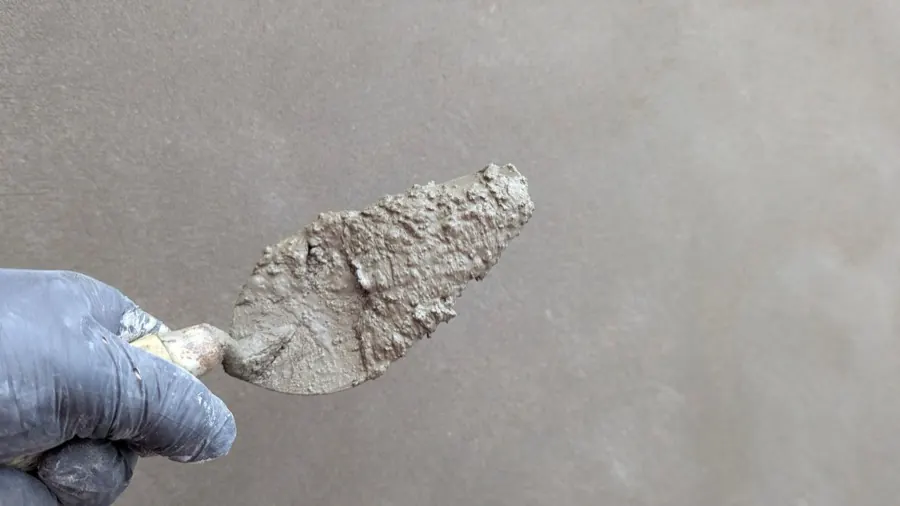
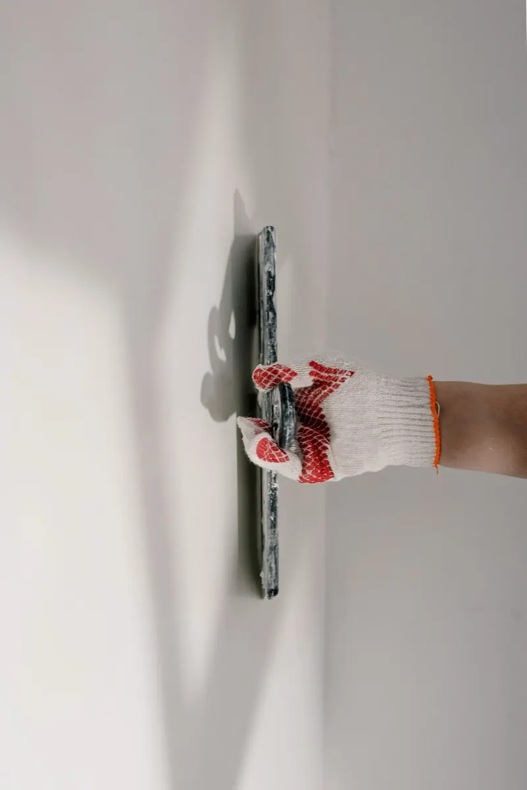

Ravalement et peinture à Lannion,
dans les règles de l'art.
VB Rénovation, artisan peintre en bâtiment. Devis et déplacement gratuits.
Artisan du Trégor
Une façade bretonne vit dehors, par tous les temps.
Embruns, pluie, vent d'ouest : à Lannion, une façade encaisse ce que le ciel lui envoie. Nous préparons les supports avec soin et nous appliquons des produits qui laissent respirer le mur, pour un résultat qui tient dans le temps.
Enduits respirants · Peintures microporeuses · Hydrofuge de façade

Prestations
Du ravalement complet au coup de pinceau.
Chaque chantier commence par un diagnostic gratuit de vos murs, pour un devis précis et sans surprise.

Ravalement de façade
Notre cœur de métier. Nettoyage, réparation des supports, enduit et finition : votre façade retrouve son état d'origine, et le garde.

Peinture de façade
Des peintures microporeuses qui laissent respirer le mur et résistent au climat marin. Teintes conformes au PLU de votre commune.

Enduit & reprises
Reprise des enduits soufflés, cloqués ou décollés, harmonisation des supports avant mise en peinture.

Peinture intérieure
Murs, plafonds et boiseries. Supports préparés avec soin, chantier propre, rendu net.

Nettoyage & hydrofuge
Nettoyage adapté au support, démoussage et traitement hydrofuge : la façade reste propre et protégée plus longtemps.

Fissures & imperméabilisation
Traitement des fissures et microfissures, imperméabilisation des murs exposés : on soigne la cause avant de refaire la finition.
- Copropriétés & syndics
- Peinture de volets & boiseries
- Revêtements décoratifs
- Joints de maçonnerie
- Petite maçonnerie
- Conseil couleurs & finitions
Notre métier
Un ravalement réussi commence sous la peinture.
La finition ne vaut que ce que vaut le support. Avant de peindre, nous diagnostiquons le mur : humidité, fissures, enduit fatigué. C'est ce travail invisible qui fait qu'une façade reste belle dix ans au lieu de deux.

Comment ça se passe
Quatre étapes, aucune surprise.
Avis clients
Nos clients nous notent 5 sur 5.
La meilleure publicité d'un artisan, c'est le chantier d'avant. Retrouvez les avis laissés par nos clients sur notre fiche Google.
Zones d'intervention
Lannion, le Trégor et les Côtes-d'Armor.
Basés route de Tréguier à Lannion, nous intervenons dans tout le Trégor, de la Côte de Granit Rose aux terres, et au-delà selon les chantiers.
- Lannion
- Perros-Guirec
- Trébeurden
- Trégastel
- Pleumeur-Bodou
- Louannec
- Ploubezre
- Ploumilliau
- Plestin-les-Grèves
- Tréguier
- Penvénan
- La Roche-Derrien
- Cavan
- Bégard
- Plouaret
- Paimpol
- Guingamp
Votre commune n'est pas dans la liste ? Appelez-nous : nous étudions chaque demande.
Questions fréquentes
Vous vous demandez…
Quand faut-il ravaler sa façade ?
Plusieurs signes ne trompent pas : enduit qui cloque ou qui farine, fissures, traces vertes ou noires, peinture qui s'écaille, joints creusés. En Bretagne, l'humidité accélère tout : plus on attend, plus les dégâts gagnent le mur en profondeur. Nous proposons un diagnostic gratuit pour évaluer l'état réel de votre façade.
Le ravalement de façade est-il obligatoire ?
Le Code de la construction impose de maintenir les façades en bon état. Dans certaines communes, la mairie peut prescrire un ravalement, en pratique environ tous les dix ans. Au-delà de l'obligation, un ravalement au bon moment coûte bien moins cher qu'une façade laissée se dégrader.
Faut-il une autorisation en mairie pour ravaler ?
Dans la plupart des cas, un ravalement qui modifie l'aspect de la façade (teinte, finition) demande une déclaration préalable de travaux, et les teintes doivent respecter les règles locales d'urbanisme. Nous vous aidons à préparer le dossier et à choisir des teintes conformes.
Quel est le prix d'un ravalement de façade à Lannion ?
Le prix dépend de la surface, de l'état du support, de la hauteur et de la finition choisie. C'est pourquoi nous ne chiffrons jamais sans avoir vu le mur : le diagnostic et le devis sont gratuits, détaillés et sans engagement.
Combien de temps durent les travaux ?
Une maison se ravale en général en une à deux semaines selon la surface, la météo et les reprises à réaliser. Nous vous annonçons un calendrier avant le chantier et nous vous tenons informé de l'avancement.
Quelle est la meilleure période pour ravaler en Bretagne ?
Du printemps au début de l'automne, quand les supports sont secs et les températures douces. Mais chaque produit a ses tolérances : selon les travaux, nous intervenons une grande partie de l'année. Le plus simple est d'anticiper : les créneaux de beau temps partent vite.
Peinture, enduit ou hydrofuge : que choisir ?
Tout dépend de l'état du mur. Un support sain peut se contenter d'un nettoyage et d'un hydrofuge. Un enduit fatigué demande des reprises avant toute finition. La peinture microporeuse protège et change l'aspect. C'est le diagnostic qui décide, pas le catalogue : nous vous recommandons la solution adaptée, pas la plus chère.
Travaillez-vous sur le granit et le bâti ancien ?
Oui. Le bâti du Trégor mélange granit, moellons et enduits anciens : des murs qui doivent respirer. Nous utilisons des produits adaptés à chaque support, pour ne jamais enfermer l'humidité dans le mur.
Faites-vous aussi la peinture intérieure ?
Oui. Murs, plafonds, boiseries : nous appliquons à l'intérieur la même exigence de préparation qu'en façade, avec des chantiers propres et un rendu net. C'est souvent le complément naturel d'un ravalement.
Contact
Parlons de vos murs.
Décrivez votre projet ou envoyez-nous une photo de votre façade. Nous vous rappelons pour convenir d'une visite : le diagnostic et le devis sont gratuits.
Nous vous rappelons sous 24 h ouvrées pour convenir d'une visite.
06 04 10 71 12Le plus simple est de nous appeler directement : nous répondons.
06 04 10 71 12